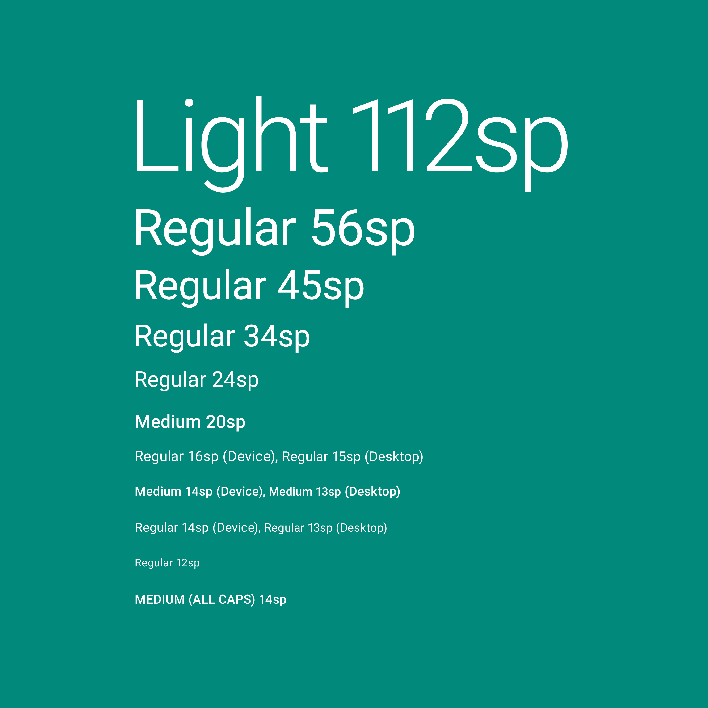

Roboto and Noto are the standard typefaces on Android and Chrome.
Roboto is the standard typeface on Android.
Noto is the standard typeface for all languages on Chrome and Android for all languages not covered by Roboto.
Script types
- English and English-like (Latin, Greek, and Cyrillic)
- Dense (Chinese, Japanese, and Korean)
- Tall (South and Southeast Asian and Middle Eastern languages)
App bar
Title style, Medium 20sp
Buttons
English: Medium 14sp, all caps
Dense: Medium 15sp, all caps
Tall: Bold 15sp
Subheading
English: Regular 16sp (device), 15sp (desktop)
Dense: Regular 17sp (device), 16sp (desktop)
Tall: Regular 17sp (device), 16sp (desktop)
Body 1
English: Regular 14sp (device), 13sp (desktop)
Dense: Regular 15sp (dense), 14sp (desktop)
Tall: Regular 15sp (device), 14sp (desktop)
Text contrast ratios
Minimum: 4.5:1
Preferred: 7:1
